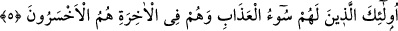
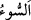

5. İşte bunlar, azâbı en ağır olanlardır; âhirette en çok ziyâna uğrayacaklar da
onlardır.
“İşte bunlar,” inkâr ve bocalama ile vasfedilenler, Bedir günü öldürülmek ve esir
edilmek sûretiyle “azâbı en ağır olanlardır;”
“ insana keder ve üzüntü veren her şeydir.
“Âhirette en çok ziyana uğrayacaklar da onlardır.” Hidâyet karşılığında dâlâleti
satın aldıkları için insanların en çok ziyan edenleridirler. Çünkü onlar cenneti ve
nimetlerini kaybettiler, cehennem ateşinden kurtuluştan mahrum oldular.
Bilesin ki dünya ehli âhiret ziyânı içinde, âhiret ehli de Mevlâ ziyânı içindedir. İki
âleme de iltifat etmeyen ise Mevlâ’yı kazanır.
Bâyezid (k.s.) çölde, üzerinde “Dünyayı da ve âhireti de kaybetti.” yazan bir kafatası
buldu, ağladı ve onu öptü. Sonra: “Bu bir sûfînin başıdır.” dedi.
Mevlâ’yı bulan herşeyi bulmuştur. Mevlâ’yı bulamayan ise, herşeyi bulmuş olsa bile
işe yarar birşey bulamamış, vaktini boşa harcamış demektir.
Hâfız der ki:
Güzel geçen günler, dostla geçirilen anlarmış
Gerisi abes, hepsi boşunaymış
Âriflerden biri der ki: “Bana kırk hûrî keşfolundu. Onları havada üstlerinde gümüş,
altın ve mücevherden elbiseler olduğu halde uçuşurken gördüm. Onlara bir kez baktım,
sonra kırk gün cezâlandırıldım. Daha sonra onlardan daha güzel ve daha endamlı seksen
hûrî bana keşfolundu ve: “Onlara bak.” denildi. Bunun üzerine secdeye kapandım ve
secdede gözlerimi yumdum ve: “Ya Rabbi senden başkasından sana sığınırım, benim
buna ihtiyacım yok.” dedim. Allah onları benden uzaklaştırana kadar duâ edip
yalvarmaya devam ettim.
İşte âriflerin hâli böyledir. Allah Teâlâ’dan başkasına/mâsivâya iltifat etmezler. Mülk
ve melekût âlemlerinden kör olurlar (onları görmezler). Câhil gâfiller ise Allah’tan
başka şeylere (mâsivallah) sevgileriyle kalb gözleri kör ve kalb kulakları sağır
olmuştur. Çünkü mânâ âleminde kör olan, mutlaka sağır ve dilsiz de olur. Rasûlullah
(s.a.)’in: “Bir şeyi sevmen, seni kör ve sağır yapar.”[43] hadîsinde de buna işâret
vardır. Sûret körü ise bunun aksinedir. Çünkü onun kulağı, bulunduğu durumda dâveti
işitmiş ve kabul etmiştir.
Şu halde akıl sâhibine gereken kalbin perdelenmesine ve helâkine sebep olan çirkin
amellerden; bocalamayı ve körlüğü gerektiren kötü ahlaktan kaçınmak; bilakis Mevlâ’ya
vuslata götüren, mutlak olarak hüsranı yasaklayan Kur’ân ile amele gayret etmektir.
Kulu Hakk’a kelâmı ile münâcât’ın, diğer hallerinde değil ancak namazın kıyam hâlinde,
meşrû kılınması kayyûmiyete iştirâk içindir. Bu yüzden meliklerin edebinden birisi de